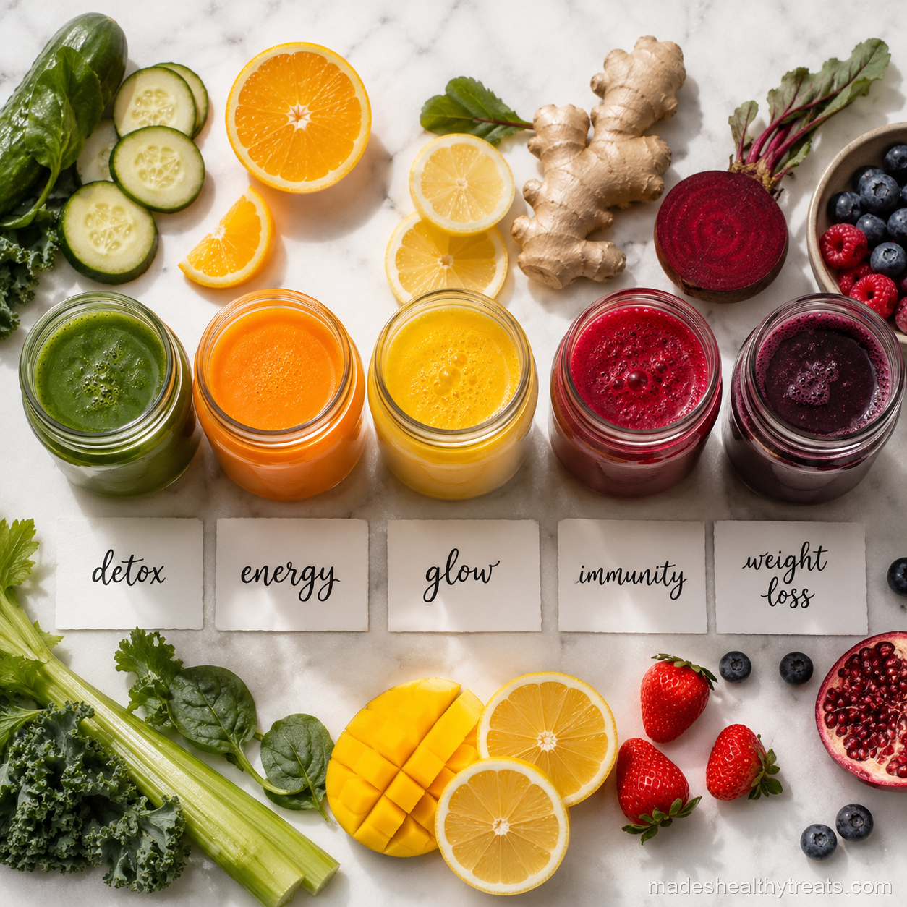

How I Choose The Best Juice To Drink In Morning
The best juice to drink in morning depends on what I need that day. I used to make whatever sounded pretty, which is valid, but eventually I noticed that cucumber mint felt different from beet apple ginger, and carrot turmeric orange felt different from celery lemon ginger. Now I match the juice to the morning instead of expecting one jar to do everything.
For Weight Loss I Choose Cucumber Mint
When I want something light and refreshing, I make cucumber mint juice with cucumber, green apple, lime, mint, coconut water, and ice. It feels hydrating, crisp, and gentle on days when I wake up puffy or want a clean start before breakfast.
For Energy I Choose Beet Apple Ginger
For energy, I love beet apple ginger juice. I use beetroot, apple, carrot, ginger, lemon, and cold water, then strain it until smooth. The beetroot makes it feel powerful, the apple makes it drinkable, and the ginger gives it a bright little push.
For Skin I Choose Carrot Turmeric Orange
When my skin looks tired, I make carrot ginger juice with carrots, orange, ginger, turmeric, lemon, and water. The color alone makes me feel hopeful. It tastes like liquid sunshine and gives me that vitamin rich morning glow feeling.

I have learned that the best wellness habits are the ones that still feel kind on a normal Tuesday morning.
For Immunity I Choose Celery Lemon Ginger
For immunity, I make celery detox juice with celery, cucumber, lemon, ginger, water, and ice. It is green, clean, and surprisingly refreshing. I like it when I want something less sweet and more mineral rich.
For Gut Health I Choose Aloe Pineapple Mint
For gut health, I make a gentle aloe pineapple mint juice with fresh pineapple, a small amount of food grade aloe, mint, lime, and water. It tastes tropical and soothing. The best juice to drink in morning is the one that matches your body, your goal, and the kind of day you are about to live.
How I Pair Juice With Breakfast
I usually pair morning juice with something that has protein or healthy fat because juice on its own does not always hold me for long. If I drink cucumber mint juice, I might have eggs, yogurt, or avocado toast afterward. If I drink beet juice before a walk, I eat breakfast when I come home. The best juice to drink in morning is even better when it fits into a full morning instead of pretending to be the whole meal.
What I Do When I Am Short On Time
When I am short on time, I choose the simplest juice with the fewest ingredients. Celery, cucumber, lemon, ginger, and water can be blended and strained quickly. Pineapple, turmeric, ginger, and lemon also comes together fast because the pineapple does most of the flavor work. I have learned not to let the perfect recipe keep me from making a good one. A five minute juice made imperfectly still beats the beautiful complicated juice I never start.
I also think about the weather. On hot mornings, cucumber mint or celery lemon feels cooling and easy. On gray mornings, carrot ginger orange feels sunny enough to change my attitude. Before a walk, beet apple ginger feels stronger and more purposeful. Matching juice to the moment makes the habit feel less like a rule and more like a conversation with my body, which is exactly why I keep doing it.
I also let my appetite guide me. If I wake up hungry, I do not expect juice to carry the whole morning by itself. I drink the juice, enjoy the freshness, and then eat something that makes me feel grounded. That balance keeps the habit joyful instead of turning it into another rule I have to manage.
You Might Also Like

Does a Smoothie a Day Actually Help You Lose Weight? I Tried It for 30 Days
I replaced my rushed breakfast with one green smoothie every morning for 30 days and tracked what really changed.
Read more →
What Happens to Your Body When You Drink Green Smoothies Every Day
I explain the simple body changes I noticed and the science that makes daily green smoothies make sense.
Read more →
The 7 Biggest Smoothie Mistakes That Are Ruining Your Results
I made these smoothie mistakes myself before I learned how to blend for energy, fullness, and real results.
Read more →Made's Note
Do not overthink the perfect morning juice. Ask your body what it needs, choose one bright jar, and let that be enough for today. When I think about best juice to drink in morning, I think about real mornings, real kitchens, and the small choices that help us feel at home in our bodies.